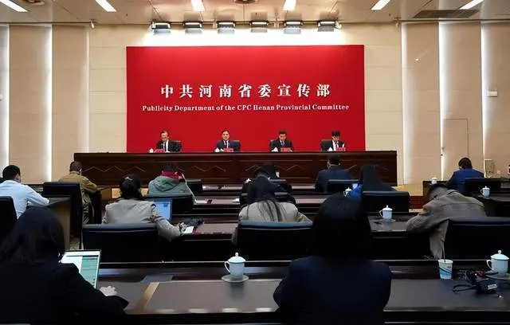

郑州已形成5个千亿级产业集群，培育“专精特新”企业1839家
首页 / 郑州已形成5个千亿级产业集群，培育“专精特新”企业1839家

在10月10日举行的“河南这十年”主题系列新闻发布会郑州专场上，郑州市人民政府副市长史占勇介绍，党的十八大以来，郑州市深入落实习近平总书记“三个转变”等重要指示精神，全面完整准确贯彻新发展理念，坚持制造业高质量发展主攻方向，加快打造国家先进制造业高地。十年来，规上工业增加值年均增长9.3%，高于全国2.5个百分点；尤其是2020、2021和今年前8个月，规上工业增加值分别增长6.1%、10.4%、7.9%，工业已成为全市稳经济促增长的“压舱石”。
强力实施“制造强市”战略，制定实施先进制造业高地建设规划、换道领跑战略工作方案等一系列政策措施，建立重点产业链群链长制和盟会长制，积极构建以先进制造业为支撑的“1556”现代产业体系，已形成电子信息、汽车、装备制造、现代食品、铝精深加工5个千亿级产业集群。2021年，工业增加值占全市GDP比重达26.8%，今年上半年达到29.7%；高技术产业增加值占规上工业增加值的比重由2012年的10%提高到2021年的32.7%。加速推进产业转型升级，坚持调存量与优增量并举，电子信息、汽车及装备制造、新材料、生物医药、铝及铝精深加工、现代食品等六大主导产业占规上工业比重达到82.1%，提高了18.1个百分点，六大高耗能行业占比降至28.9%，下降了12.7个百分点。特别是“十三五”以来，战略性新兴产业占规上工业比重达43.4%，提高了20.6个百分点；淘汰煤炭、钢铁、碳素、水泥等“两高一资”产能3052.6万吨，规上工业单位增加值能耗降低47%，超全国31个百分点。积极推动国家战略落地生效，建成郑州经开区等3个国家新型工业化产业示范基地，获批“国家服务型制造示范城市”试点示范城市等15个国家级试点示范。
着力建设高水平创新平台，培育产业研究院5家、制造业创新中心17家、工业设计中心35家。持续加大研发投入，制造业研发经费投入占全社会研发经费投入比重达到55.8%，规上工业企业研发活动覆盖率超过60%，主导产业、重点企业研发机构实现全覆盖。积极培育壮大创新主体，出台实施加快制造业高质量发展“1+N”政策体系，培育中国制造业500强企业3家、制造业单项冠军示范企业7家、“专精特新”企业1839家（其中国家级111家、省级565家)、国家级试点示范企业（项目、平台）达296个。
主动承接优质产业转移，连续举办8届中国（郑州）产业转移系列对接活动、4届世界传感器大会，形成招商平台品牌优势，成功引进上汽、比亚迪、超聚变、浪潮、新华三等亿元以上产业链项目1200余个。大力开展“三个一批”活动，突出抓好签约项目开工、开工项目投产、投产项目达产，重大工业和信息化项目完成投资超7000亿元，兴港新能源产业园等1100多个重点项目顺利开建，华锐光电等1200多个重点项目顺利竣工或达产，其中上汽乘用车项目创造了当年签约、当年建成、当年投产的“郑州速度”。
狠抓数字新基建，重点建设以5G、窄带物联网等为代表的通信网络基础设施，建成5G基站3.5万个，5G网络规模位居全国第一方阵；国家级互联网骨干直联点总带宽达到1820G，居全国第5位。加快企业上云上平台，培育省级企业上云服务商35家、占全省80%以上，上云企业超5.6万家、占全省近1/3，接链企业5200家，实现了“一行业一平台一系统解决方案”。
深入开展“万人助万企”活动，全面推动纾困帮扶一揽子政策免申即享、直达兑现，帮助企业破瓶颈、扩市场、解难题。大力实施优秀企业家领航计划，培育领军型、成长型企业家1082名，培训万余人次，支持企业家专注创业创新、安心经营发展。